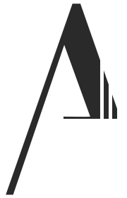

About Us
Profile/Consept.

このページでは、「Profile、サイトコンセプト、考え、スキル」を紹介しています。
PD_About Us
Profile, site concept, thoughts and skills.
PD_About Us
01
Profile
自己紹介 / 好きなもの
小山 瑞樹
- デザイン専門学校 卒業 2019
- フリーター歴 約4年 2018 ~ 2022
物流 / 介護補助 / レザークラフト / イベント設営・図面制作etc..
- 2021~ Abstract Artist「Theme：Natureinspire」
- 2022~ Webデザイナー「Precision Design」
好きな食べ物
- パフェ、クレープ、ケーキ、おはぎ、わらび餅、 オムライス、カルボナーラ、ハンバーグ、鰻、さつま芋 etc..
好きな事
- モノ作り、散歩、サイクリング、読書、運動、筋トレ、 カフェ巡り、好きなアニメやゲームの考察、人と話すこと etc..
PD_About - Profile
02
Concept
当サイトは作者Oyamaの好きなデザイン、こだわりを表現。
素材はテクスチャ以外は一から制作。
文章寄りもデザインやアニメーションを見てほしいと思い、全体的な文字サイズを小さく、色は背景に馴染む色にしました。
PD_About - Concept
03
Thoughts
僕は、「想い」と「こだわり」が未来を形づくると考えています。
それは、デザインに関わる中で、細部へのこだわりが驚きと感動を生み出し、人々の心を動かす瞬間を目にしてきたからです。
些細な要素であっても、そこに込められた意図や工夫が、人々に深い印象を与え、新たな価値を生み出します。
この体験を通じて、想いとこだわりが、単なるデザイン以上の未来を創造する力になると感じています。
あなたの「想い」を受け取った人々が共感し、新しい価値を生み出すために、僕たちは細部にまでこだわります。
その「こだわり」こそが、唯一無二の作品を生み出し、さらなる共感を呼び起こすと信じています。
想いが、PrecisionDesignの挑戦となり、共に未来を創造していくと思います。
このような想いで、活動しており、
共に良いものを作り提供できる、長く続くパートナーになれるよう精一杯サポートいたします。
PD_About - Thoughts
04
Skill
Webサイト制作、デザイン、Art、コンサルティング
Tool
- WordPress、STUDIO、Wix、Git hub
- Figma、Photoshop
- Photoshop、Lightroom
Git hub
Wordpress
Wix
HTML
Figma
Discord
Slack
LINE
Instagram
Facebook
PD_About - Skill
05
自己表現こそが己を確立する.
自己表現は人生最大限のパフォーマンス.
僕は、「想い」と「こだわり」が未来を形づくると考えています。
それは、デザインに関わる中で、細部へのこだわりが驚きと感動を生み出し、人々の心を動かす瞬間を何度も目にしてきたからです。
些細な要素であっても、そこに込められた意図や工夫が、人々に深い印象を与え、新たな価値を生み出します。
この体験を通じて、想いとこだわりが、単なるデザイン以上の未来を創造する力になると確信しました。
あなたの「想い」を受け取った人々が共感し、新しい価値を生み出すために、僕たちは細部にまで徹底的にこだわります。
その「こだわり」こそが、唯一無二の作品を生み出し、さらなる共感を呼び起こすと信じています。
あなたの想いが、PrecisionDesignの挑戦となり、共に未来を創造していくと僕は考えています。
僕は誠心誠意、全力で、想いや商品を求める人へ届けるお手伝いをいたします。
共に良いものを作り提供できることを願っています。
小山 瑞樹
1998年8月生まれ / 宮城県出身
経歴
- デザイン専門学校 卒業
- フリーター歴 約4年
（物流 / 介護補助 / レザークラフト / イベント設営・図面制作）etc..
- Webデザイナー 約2年「 Precision Design 」
- Abstract Artist 約4年「 Theme：Natureinspire 」
好きな食べ物：
パフェ、クレープ、ケーキ、おはぎ、わらび餅、
オムライス、カルボナーラ、ハンバーグ、鰻、さつま芋 etc..
好きな事：
モノ作り、散歩、サイクリング、読書、運動、筋トレ、
カフェ巡り、好きなアニメやゲームの考察、人と話すこと etc..
当サイトは、シンプルで先錬されたデザインで、優しそうな人物をコンセプトに制作しました。
白と黒を基調とし、落ち着いた大人の雰囲気を演出しつつ、フォント選びにこだわり、柔らかさと温かみを表現しています。
無駄を削ぎ落としたシンプルなデザインに、クラシックな要素を取り入れることで、
時代を超えた上品さを感じさせる仕上がりとなっています。
#2e2e2e;
#4b4b4b;
#c7c7c7;
#A07171;
rgba(217, 217, 217, 0.5);